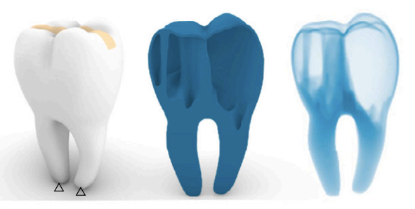

Publications
2025, 2024, 2023, 2022, earlier, under review
2025

|
43. Data-driven Inverse Design of Multifunctional Bicontinuous Multiscale Structures. (OPENPM) Lili Wang, Jingxuan Feng, Xiaoya Zhai*, Jiacheng Han, Kai Chen, Winston Wai Shing Ma, Ligang Liu, Xiao-Ming Fu. Nature Communications,2025. |

|
42. High-Efficiency Design of 3D Hydrodynamic Metamaterials with Tailored Permeability. (OPENPM) Qingyu Xu, Xiao-Ming Fu, Ligang Liu, Xiaoya Zhai*. Computers and Structures,2025. [Paper] |

|
41. OpenTM: An Open-source, Single-GPU, Large-scale Thermal Microstructure Design Framework. Yuchen Quan, Xiaoya Zhai*, Xiao-Ming Fu. Smart Materials in Manufacturing,2025. [ArXiv] |
| 40. Computational multi-layered wood carving art. Haochen Liu, Zhi Li, Kang Wu*, Youcheng Cai, Xiaoya Zhai, Ketian Zhang, Ligang Liu, Yi Min Xie, Xiao-Ming Fu. Computers & Graphics, 2025. [Paper] |
|
| 39. Process simulation‑informed topology optimization for formwork‑based concrete casting. Wei Tong, Xiaoya Zhai, Yiwei Weng*, Jun Wu. Structural and Multidisciplinary Optimization, 2025. [Paper] |
|
| 38. From Density to CAD: Automatic and Robust CAD Model Generation of Topology Optimization Results via Sparse Optimization. Zepeng Wen, Xiaoya Zhai, Hongmei Kang. Advances in Engineering Software, 2025. |
|
|  | 37. Efficient Worst-Case Topology Optimization of Self-Supporting Structures for Additive Manufacturing. Nan Zheng, Xiaoya Zhai*, Falai Chen. Computer Aided Geometric Design, 2025. |
| 36. Topology Optimization of Compatible Thermal Microstructures. Tianjie Chen, Xiaoya Zhai*, Ligang Liu, Xiao-Ming Fu. International Journal of Heat and Mass Transfer, 2025. |
|
| 35. INPR-Connector: Interlocking Negative Poisson's Ratio Connectors Design for Deployable Energy Absorption Structures. Wenpeng Xu, Mengyu Zhang, Hao Xu, Menglin Yu, Liuchao Jin∗, Xiaoya Zhai*, Jingchao Jiang. Composites Part B: Engineering, 2025. [Paper] |
|

|
34. Constructing Boundary-identical Microstructures by Guided Diffusion for Fast Multiscale Designs. Jingxuan Feng+, Lili Wang+, Xiaoya Zhai*, Kai Chen, Wenming Wu, Ligang Liu, Xiao-Ming Fu*. Computer methods in applied mechanics and engineering, 2025. [Paper] |

|
33. 超材料的智能设计研究进展. 代铁琳, 金刘超, 尚宸, 翟晓雅*, 傅孝明, 刘利刚. 计算机辅助设计与图形学学报, 2025 [Paper] |

|
32. Finite element analysis, machine learning, and digital twins for soft robots: state-of-arts and perspectives. Liuchao Jin, Xiaoya Zhai, Wenbo Xue, Jingchao Jiang, Kang Zhang, Wei-Hsin Liao*. Smart Materials and Structures, 2025 [Paper] |